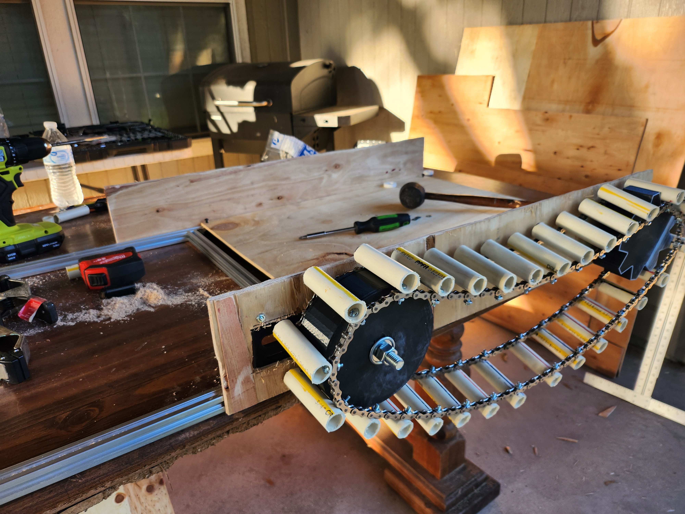

ROBOTICS AND LUNAR EXPLORATION
NASA Lunabotics
Robotic Excavation and Berm Construction System
NASA Lunabotics is a university competition in which student teams design and build robotic systems for excavation and construction tasks using simulated lunar regolith.

Project Overview
Our team developed a remotely operated robotic excavation system designed to work with simulated lunar regolith. The robot collected, transported, and deposited material to support the construction of a protective berm.
The project required mechanical design, electrical integration, manufacturing, testing, project management, and teamwork. The system was developed for a lunar-like environment where reliability, mobility, and efficient material handling are important.
The Engineering Problem
Future lunar missions may need to excavate and move regolith to build landing pads, roads, radiation shielding, and protective berms. Sending conventional construction materials and equipment from Earth would be expensive.
Robotic construction systems could use material already available on the Moon while reducing the amount of direct human labor required in dangerous environments.
Project Objectives
- Design a mobile robot capable of operating on simulated lunar terrain.
- Develop a mechanism for excavating and collecting regolith.
- Transport the collected material across the competition area.
- Deposit and shape the material into a protective berm.
- Integrate the mechanical, electrical, and control systems.
- Test and improve the robot before competition.
System Operation
- The operator remotely positions the robot near the excavation area.
- The excavation mechanism collects simulated lunar regolith.
- The robot transports the collected material.
- The material is deposited in the construction area.
- The process is repeated to form the required berm.
My Role
I served as the team lead and project manager. I helped organize the team, coordinate the engineering work, manage the project schedule and budget, and prepare the team for testing and competition.
- Coordinated the mechanical, electrical, and programming groups.
- Helped define the robot requirements and project goals.
- Managed a project budget that increased from approximately $16,000 to $20,000.
- Organized design reviews, build activities, and system testing.
- Supported fabrication, troubleshooting, and robot integration.
- Helped prepare technical presentations and project documentation.
Engineering and Design Areas
- Robotic excavation
- Material collection and transportation
- Mechanical structure and mobility
- Electrical power and wiring
- Remote operation and controls
- System integration
- Manufacturing and assembly
Testing and Improvement
The robot required repeated testing to evaluate its mobility, excavation performance, material capacity, electrical reliability, remote operation, and ability to form a berm.
Test results were used to identify mechanical and electrical problems, improve system reliability, and prepare the robot for operation in the simulated lunar environment.
Leadership and Outreach
In addition to the engineering work, I supported team organization, fundraising, outreach, and communication. Our outreach activities introduced more than 250 students to robotics, engineering, and lunar exploration.
Skills Demonstrated
Robotics • Mechanical Design • Project Management • Team Leadership • Manufacturing • Electrical Integration • Testing • Systems Engineering • Technical Communication